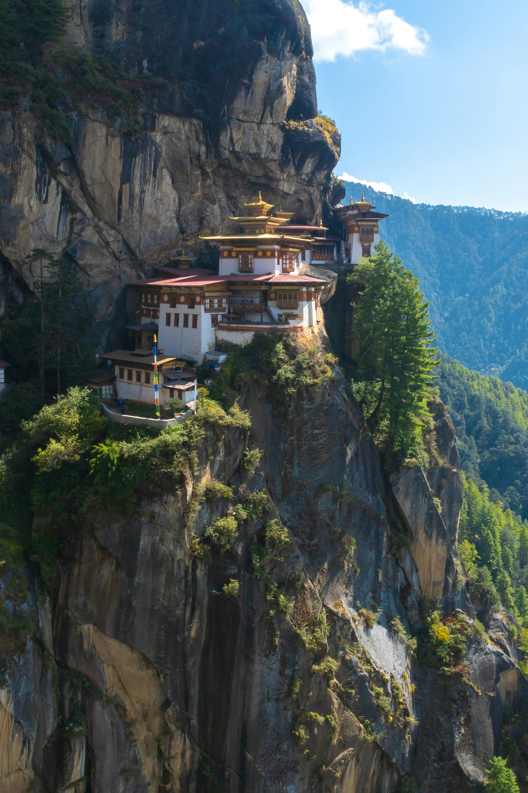
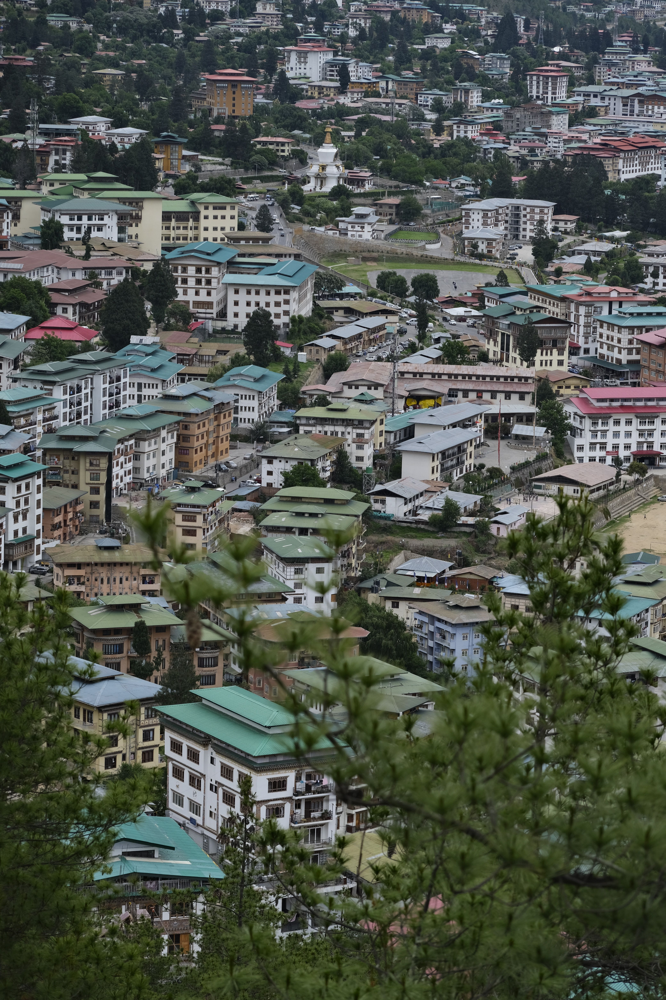
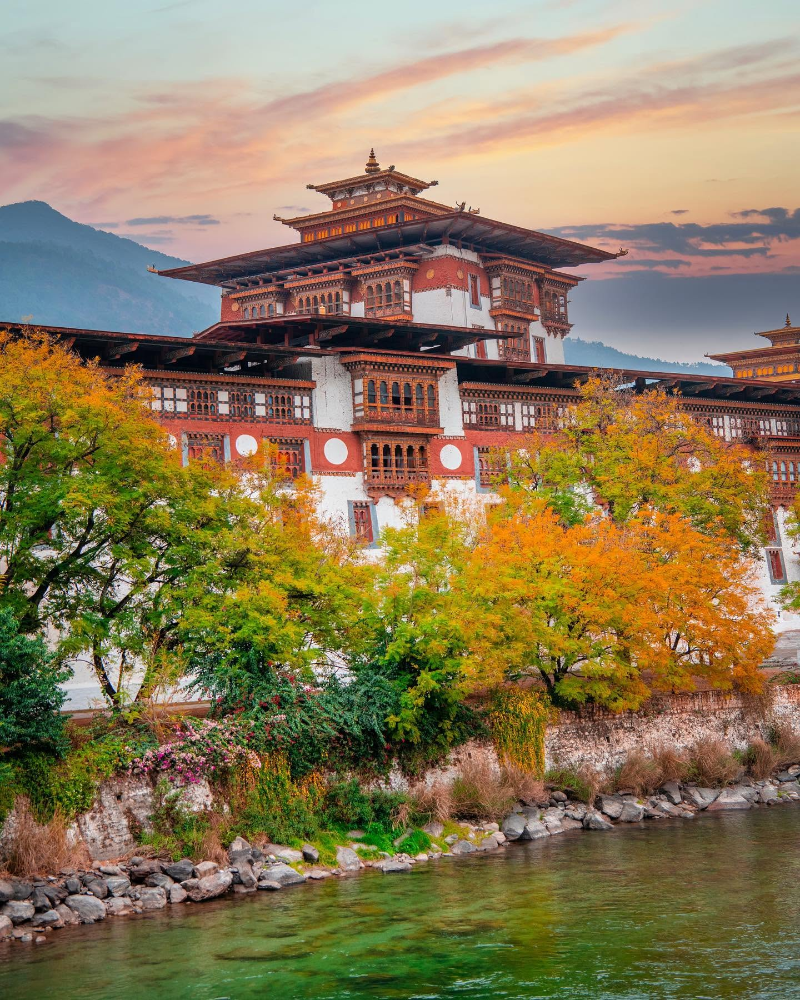

PARO
Paro Valley
A beautiful valley surrounded by mountains, traditional Bhutanese architecture, and one of the country's most iconic landmarks, Paro Taktsang.
View on Google Maps
Bhutan is a Himalayan kingdom known for its dramatic mountain landscapes, ancient monasteries, and deeply rooted traditions. From peaceful valleys to remote mountain paths, the country offers a unique connection between nature, culture, and everyday life.
Discover a destination where centuries-old traditions remain part of modern life, surrounded by some of the most spectacular scenery in the Himalayas.

A beautiful valley surrounded by mountains, traditional Bhutanese architecture, and one of the country's most iconic landmarks, Paro Taktsang.
View on Google Maps
Bhutan's capital is a fascinating mix of traditional architecture, modern life, local markets, monasteries, and mountain scenery.
View on Google Maps
Known for its beautiful valley landscapes, rivers, and the magnificent Punakha Dzong, this former capital offers a peaceful side of Bhutan.
View on Google Maps